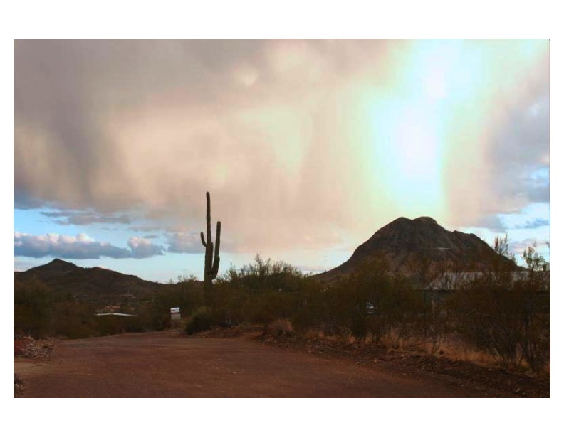
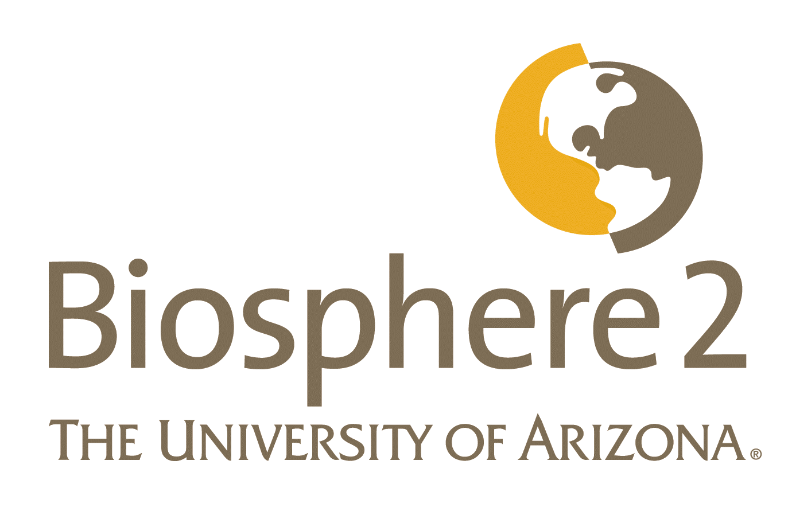
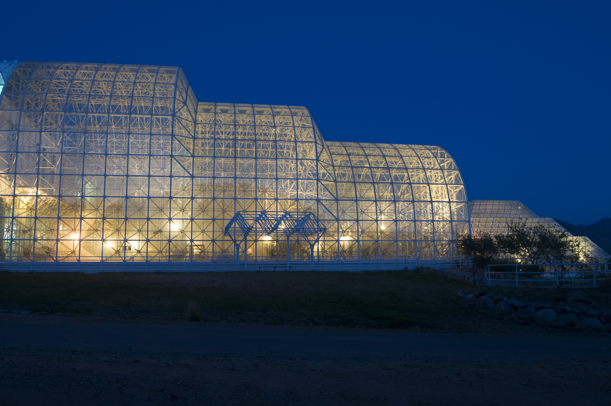
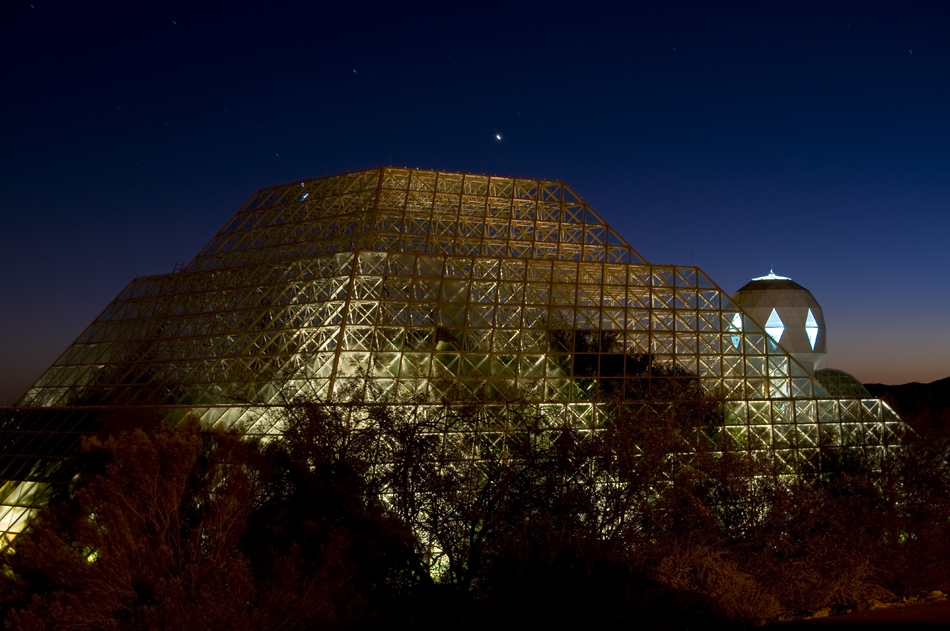

<html>

<head>
<meta http-equiv="Content-Type"
content="text/html; charset=iso-8859-1">
<meta name="Author" content="Clayton T. Morrison">
<meta name="description" content="Evapotranspiration Experiment">
<meta name="keywords"
content="evapotranspiration experiment biosphere 2 university of arizona">

<title>Citizen Scientists Studying Evapotranspiration</title>

</head>

<style>
A:active { color: "#800000"; text-decoration : none; }  
A:link { color: "#005000"; text-decoration : none; } 
A:visited { color: "#3F3F3F"; text-decoration : none; }  
A:hover { background-color: rgb(150,200,200); }
</style>

<!- A:hover { "#4682B4" } ->

<!- <body bgcolor="#FFFFFF" text="#000000" link="#005000"
vlink="#3F3F3F" alink="#800000">

<body bgcolor="#FFFFFF">

<center>

<font face="Verdana,Helvetica,Arial">

<table with="700">
<tr><td halign="center">
<font size=-1>[ <b>HOME</b> | <a href="evap.html"><b>About Evapotranspiration</b></a> | <a href="juan.html"><b>Juan's Experiment</b></a> | <a href="daniel-experiment.html"><b>5th Grade Citizen Scientist!</b></a> ]</font>
</td></tr>
</table>

<font color="darkblue"><h2>Citizen Scientists Studying Evapotranspiration</h2></font>

<!-- ----- -->

<table width="700">
<tr><td>
<hr>
<font size="-1">
<b><font color="red">Publications!</font> <!-- <font color="darkblue">05 October 2010</font></b> published: -->

<blockquote>
Juan C. Villegas, Javier E. Espeleta, Clayton T. Morrison, David D. Breshears, and Travis E. Huxman. <a href="http://www.jswconline.org/content/69/3/78A">Factoring in canopy cover heterogeneity on evapotranspiration partitioning: Beyond big-leaf surface homogeneity assumptions</a>. <em>Journal of Soil and Water Conservation</em> 69(3), pp.78A-83A, 2014.
</blockquote>

<blockquote>
Carole R. Beal, Clayton T. Morrison, and Juan C. Villegas (2013). <a href="https://www.springerprofessional.de/en/human-computation-as-an-educational-opportunity/1895560">Human Computation as an Educational Opportunity</a>. In Pietro Michelucci (Ed), <em><href="https://www.springerprofessional.de/en/handbook-of-human-computation/1895524">Handbook of Human Computation</a></em> (pp. 163-170). Springer.
</blockquote>

<blockquote>
Juan C. Villegas, Clayton T. Morrison, Katherine L. Gerst, Carole R. Beal, Javier E. Espeleta and Matt Adamson (2010).  <a href="https://dl.sciencesocieties.org/publications/nse/abstracts/39/1/150">Impact of an Ecohydrology Classroom Activity on Middle School Students' Understanding of Evapotranspiration</a>, <em>Journal of Natural Resources & Life Sciences Education</em>, 39:150-156.
</blockquote>
</font>
</td></tr>
<tr><td>
</table>

<!-- ----- -->

<table width="700">
<tr><td>
<hr>
<font size="-1">
<b><font color="darkblue">09 November 2009</font></b>: We submitted a detailed description of our Evapotranspiration experiment as a classroom activity to the <a href="http://www.esa.org/">Ecological Society of America (ESA)</a>'s <a href="http://ecoed.net/">Digital Teaching Library (EcoEd DL)</a> and is among the library's featured <a href="http://www.ecoed.net/pages/millennium/">Draught &amp; Water-Ecosystem Services Teaching Collection</a> for the ESA's <a href="http://www.esa.org/millenniumconf/2009/">Millenium Conference 2009</a>.  The material was peer reviewed and accepted.  It is available here:
</font>
</td></tr>
<tr><td>
<blockquote>
<a href="ecoeddl/b2e2-classroom-activity-2009.zip"><font size="-1"><em>The partitioning of evapotranspiration into evaporation and transpiration: an experimental design assessing the affects of changes in vegetation cover</em></font></a>.
</blockquote>
<hr>
</td></tr>
</table>

<!-- ----- -->

<table width="700">
<tr><td width="250"></td><td>More than 90% of the water that comes to the desert floor through precipitation (rain) evaporates right back into the atmosphere. <a href="juan.html">UA scientists</a> are working at <a href="http://www.b2science.org/">Biosphere 2</a> to discover how plants and trees change the way that water evaporates from the soil. More species of woody plants are moving into the Sonoran Desert, and it is important to find out how they will affect the water cycle.</td></tr>
</table>

<table width="700">
<tr><td>UA scientists are conducting a pilot program in collaboration with the Wilson K8 school in the Tucson area, to do the following:

<ul>
<li> Bring a real life scientific experiment into the classroom that does not just replicate an experiment, but produces data usable for ongoing scientific study
<li> Integrate the study of the water cycle with background information about the experiment and how it is conducted into the 6th grade curriculum
<li> Provide students with hands-on experience conducting a vital and important experiment
<li> Provide scientists the opportunity to communicate their work to children and the general public
<li> Promote the concept of <font color="green"><em>citizen scientists</em></font> in the Tucson community and develop closer connections between the community and the <a href="http://www.b2science.org">Biosphere 2</a>, <a href="http://arizona.edu">University of Arizona</a>, and <a href="http://cs.arizona.edu">UA Computer Science</a>.
</ul>

<b>Follow these links to learn more:</b>
<ul>
<li> Learn about the <a href="evap.html">water cycle and evapotranspiration</a>
<li> Learn about the <a href="juan.html">current evapotranspiration study</a> at the <a href="http://www.b2science.org">Biosphere 2</a>
<li> See an example of the experiment conducted by a <a href="daniel-experiment.html">citizen scientist 5th Grader!</a>
</ul>

<table width="700">
<tr><td>
<b>Who we are:</b>

<ul>
<li><a href="http://www.cs.arizona.edu/~beal/">Carole Beal</a> - <font size="-1"><a href="http://cogsci.web.arizona.edu/">UA Cognitive Science</a> and <a href="http://cs.arizona.edu">Computer Science</a></font>

<li><a href="http://cct.or.cr/english">Javier F. Espeleta</a> - <font size="-1">
<!-- <a href="http://www.b2science.org">Biosphere 2 Associate Director of Science</a> -->
<a href="http://cct.or.cr/english">Tropical Science Center in Costa Rica</a>
</font>

<li><a href="http://www.u.arizona.edu/~katgerst/">Kathy Gerst</a> - <font size="-1"><a href="http://eebweb.arizona.edu/">UA Ecology and Evolutionary Biology</a></font>

<li><a href="http://cs.arizona.edu/~clayton">Clayton T. Morrison</a> - <font size="-1"><a href="http://cs.arizona.edu">UA Computer Science</a></font>

<!-- <li><a href="http://cs.arizona.edu/~rts">Richard T. Snodgrass</a> - <font size="-1"><a href="http://cs.arizona.edu">UA Computer Science</a></font> -->

<li><a href="http://www.snr.arizona.edu/people/villegas">Juan Camilo Villegas</a> - <font size="-1"><a href="http://snr.arizona.edu">UA School of Natural Resources</a></font>

<li> Adriana Quiros
</ul>
</td>
<td halign="right">
<a href="http://www.b2science.org/">

</a>
</td>
</tr>
</table>

<b>Citizen Scientists:</b>

<ul>
<li><a href="http://www.amphi.com/teachers/ccook/home.html">Cheryl Cook</a> - Wilson K8 6th Grade Science Teacher
<li><a href="http://www.amphi.com/teachers/ntilicki/home.html">Nicole (Niki) Tilicki</a> - Wilson K8 6th Grade Science Teacher
</ul>

Please contact <a href="http://cs.arizona.edu/~clayton/">Clay Morrison</a> for more information.

</td></tr>
</table>

<br>

<table width="700">
<tr>
<td width="345"></td>
<td width="10"></td>
<td width="345"></td></tr>
</table>

<br><br><br>

</center>

</body>
</html>
